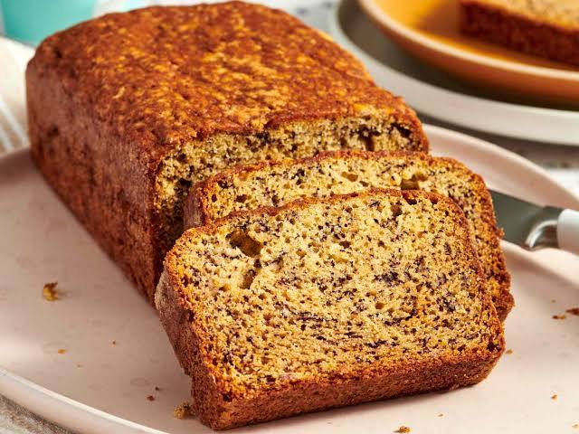

Banana cake is a soft, moist, and fragrant baked dessert made primarily with mashed overripe bananas, giving it a rich, naturally sweet flavor and a tender, lighter crumb than dense banana bread.
You can easily bake a classic, moist banana cake at home in a loaf pan or a round cake pan using simple pantry staples (or local lakatan or latundan bananas).

Ingredients
Bananas: 3 large very ripe bananas, mashed (about 1 ½ cups)
Dry Base: 1 ½ cups (180g) all-purpose flour, 1 tsp baking soda, ½ tsp baking powder, ½ tsp salt, and ½ tsp ground cinnamon (optional)
Fat & Sugars: ½ cup (113g) softened butter (or neutral cooking oil for extra moisture), ½ cup packed brown sugar, and ½ cup white sugar
Wet Ingredients: 2 large eggs (room temperature), 1 tsp vanilla extract, and ½ cup milk or yogurt
Prep: Preheat your oven to 350°F (175°C), then grease and line an 8x4-inch loaf pan or an 8-inch round cake pan with parchment paper.
Mix dry ingredients: Whisk together the flour, baking soda, baking powder, salt, and cinnamon in a bowl.
Cream butter and sugars: Beat the softened butter with the brown and white sugars until light and fluffy, then mix in the eggs one at a time and add the vanilla extract.
Add bananas: Stir the mashed ripe bananas into the wet mixture until well blended.
Combine: Add the dry ingredients alternately with the milk in two batches, stirring gently until just combined without overmixing.
Bake: Pour the batter into the prepared pan and bake for 40 to 50 minutes (or 30 to 35 minutes for a round pan) until a toothpick inserted in the center comes out clean.
Cool: Let the cake cool in the pan for 10 minutes before transferring it to a wire rack to cool completely.
(Tip: You can top the cooled cake with cream cheese frosting or fold ½ cup of chopped walnuts or chocolate chips into the batter before baking.)